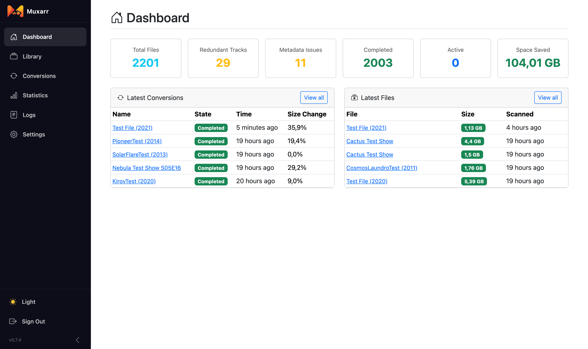
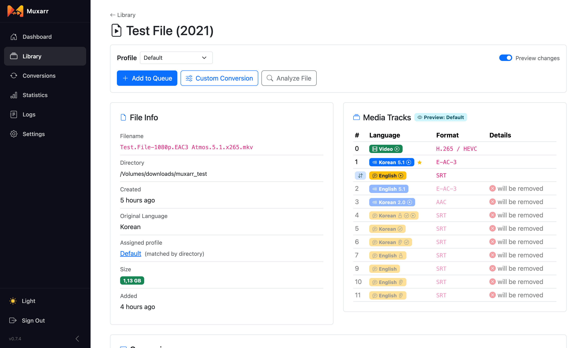
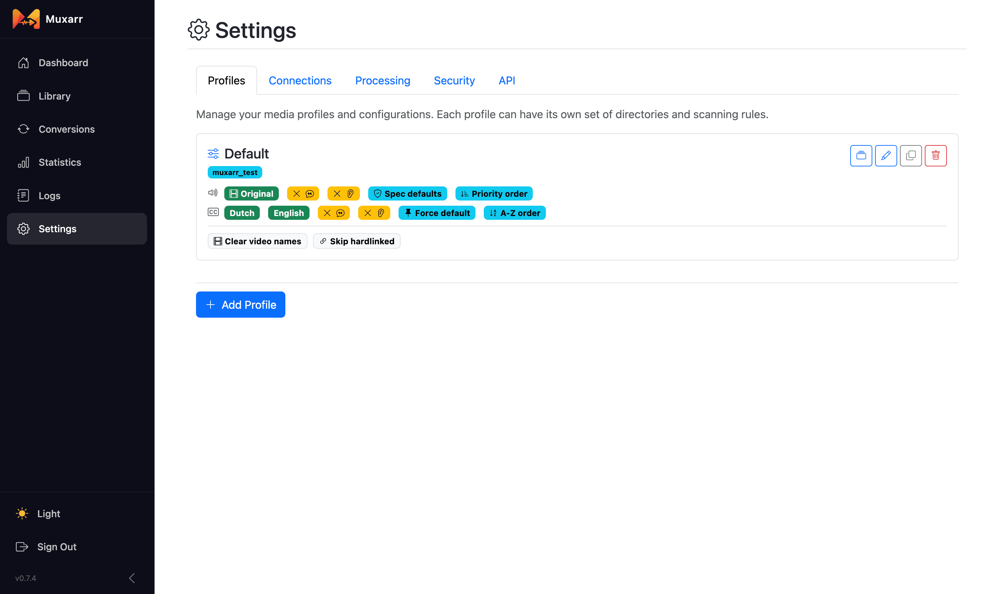
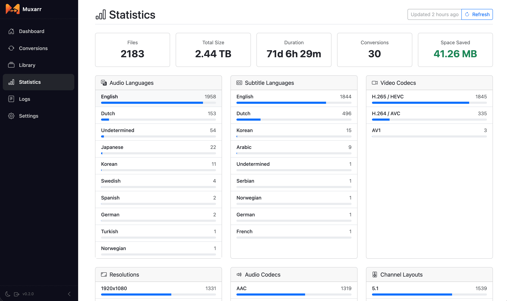
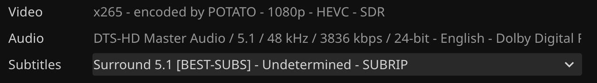
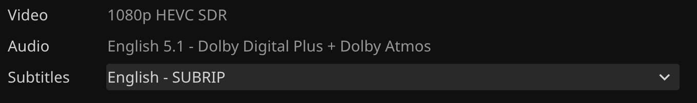

Clean up the audio and subtitle tracks in your media library
Muxarr removes unwanted audio and subtitle tracks and standardizes track metadata. It uses mkvmerge for MKV files and ffmpeg with stream copy for other containers, so tracks are remuxed rather than re-encoded and there is zero quality loss. A 4 GB file takes about a minute instead of hours, even on low-end hardware like a NAS or Raspberry Pi.
Remove audio (commentary, foreign dubs) and subtitles (SDH, foreign) without re-encoding, so quality is untouched. Cutting spare audio tracks alone often saves 10-30%.
Integrates with your *arr stack so foreign films and shows always keep the correct audio track.
Webhook support to process new imports as they arrive, with a configurable delay so tools like Bazarr can finish first.
Different language and track rules for different collections, for example anime versus western media.
Control track ordering per language, limit tracks per language, and choose between best quality or smallest size.
Cleans encoder tags and codec dumps from track names. Uses mkvpropedit for metadata-only changes, so there is no remux at all.
Validates the output file before replacing the original. If anything fails, the original is untouched.
A full breakdown of codecs, resolutions and languages across your library, plus a per-file track view before you commit to anything.
Apprise, Discord, Gotify, Ntfy, Pushover, Slack and Telegram, plus library rescans for Plex, Emby and Jellyfin.
Save this as docker-compose.yml and run docker compose up -d.
services:
muxarr:
image: ghcr.io/kirovair/muxarr:latest
container_name: muxarr
environment:
- TZ=Europe/Amsterdam
- PUID=1000
- PGID=1000
volumes:
# Muxarr's own database and config
- /path/to/muxarr/config:/config
# your media library, mount it wherever you like
- /path/to/your/media:/media
ports:
- 8183:8183
restart: unless-stoppedThe same thing without a compose file.
docker run -d \
--name=muxarr \
-e TZ=Europe/Amsterdam \
-e PUID=1000 \
-e PGID=1000 \
-p 8183:8183 \
-v /path/to/muxarr/config:/config \
-v /path/to/your/media:/media \
--restart unless-stopped \
ghcr.io/kirovair/muxarr:latest
Images are published for linux/amd64 and linux/arm64.
Only /config is fixed. Name your library mounts whatever suits your
setup and add as many as you need, then point a profile at them in the wizard.
Older installs used /data instead of /config. That still works and
always will, so upgrading needs no action. To switch, stop the container, change
/your/folder:/data to /your/folder:/config and start it again. The
host folder stays where it is and nothing is copied.
| Variable | Description | Default |
|---|---|---|
TZ | Timezone | UTC |
PUID | User ID for file permissions | 1000 |
PGID | Group ID for file permissions | 1000 |
| Path | Description |
|---|---|
/config | Muxarr's own database and configuration. Keep this one as /config. |
/media | Your media library. The container path is up to you, use /movies, /tv or anything else. |
The docs walk through all of this with screenshots, from the wizard to your first profile.
http://your-ip:8183 and the setup wizard will guide you through.




